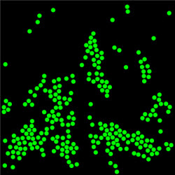

The Molecular Dynamics JavaScript Performance Model computes the trajectory of particles acted on by a Lennard-Jones force. This simulation is designed to test the speed of JavaScript for a computationally intensive model. The user can vary the number of particles, the number of frames per second, and the number of Verlet steps between frames. The actual number of Verlet steps per frame is shown.
Note: If the model becomes unstable, reset the model and reduce the computational timestep dt.
The Molecular Dynamics JavaScript Performance Model was developed by Wolfgang Christian and Francisco Esquembre using version 5 of the Easy Java Simulations (EJS 5) modeling tool. Although EJS is a Java program, EJS 5 creates stand alone JavaScript programs that run in almost any PC or tablet browser. Information about EJS is available at: <http://www.um.es/fem/Ejs/> and in the OSP ComPADRE collection <http://www.compadre.org/OSP/>.